Tramitar artefatos
Ao tramitar para uma Pessoa Física Externa, selecione  a opção Externo e o tipo de Pessoa Física em Informações do trâmite. Observe que existem campos obrigatórios (Veja Nota1):
a opção Externo e o tipo de Pessoa Física em Informações do trâmite. Observe que existem campos obrigatórios (Veja Nota1):
Tramitar para uma pessoa física externa
Informações para trâmite:
Tipo Trâmite: |
Trâmite interno ou externo |
Tipo de Pessoa: |
Pessoa física, pessoa jurídica ou Unidade Organizacional Externa |
Nacionalidade Brasileira? |
Brasileiro ou Estrangeiro |
Nome: |
Nome do destinatário do trâmite |
CPF: |
CPF do destinatário do trâmite |
Serviço: |
Tipo de serviço utilizado para as correspondências |
Correio: |
Código de rastreamento |
Imprimir Guia para Recibo: |
Imprimir Guia para recibo |
Endereço: |
Endereços cadastrados para o tipo de pessoa selecionado |
 Preenchendo o trâmite!!
Preenchendo o trâmite!!
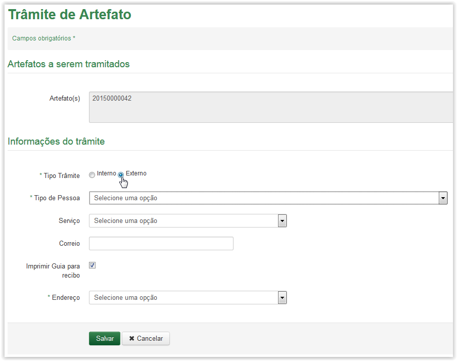
Selecionando o tipo de trâmite
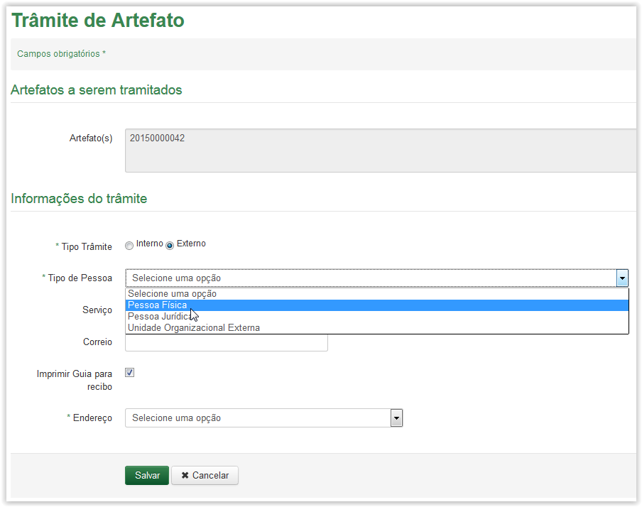
Selecionando o tipo de pessoa

Selecionando a nacionalidade
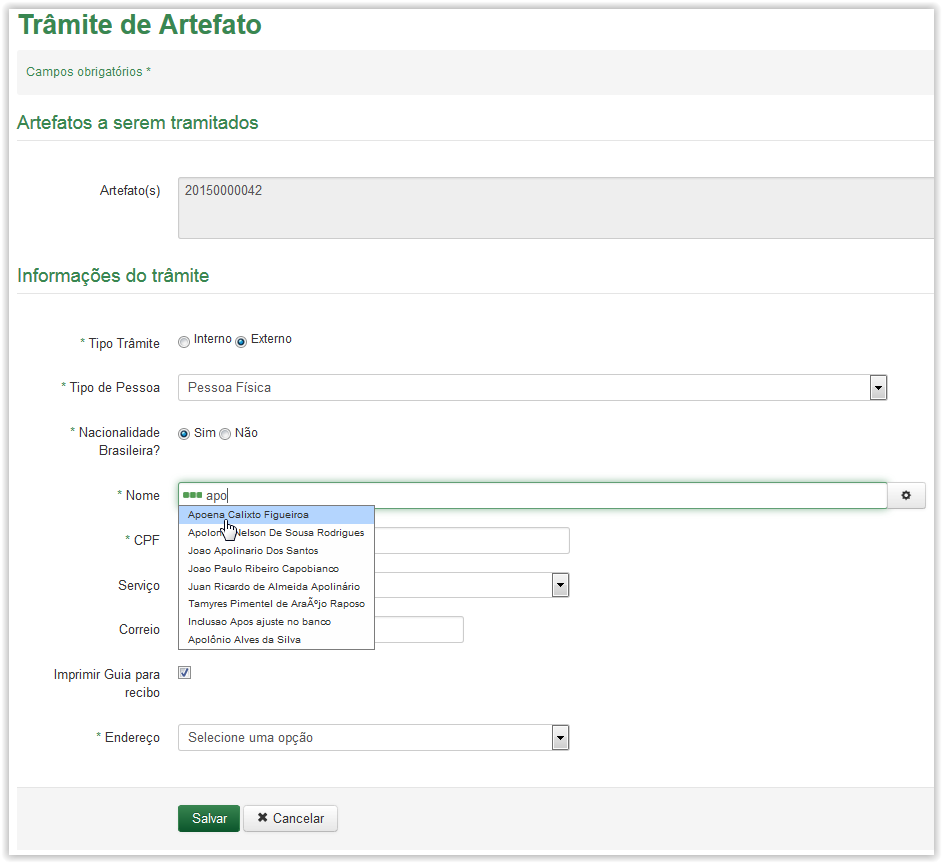
Selecionando um Nome na lista para preencher campo Nome
Observação: Caso o nome procurado não seja apresentado na lista de opções do campo, o sistema apresenta a seguinte mensagem:
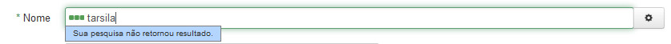
Neste caso, utilize o ícone  para efetuar o cadastro dessa pessoa e a partir daí o sistema poderá listá-lo das próximas vezes. (Veja Nota 3):
para efetuar o cadastro dessa pessoa e a partir daí o sistema poderá listá-lo das próximas vezes. (Veja Nota 3):
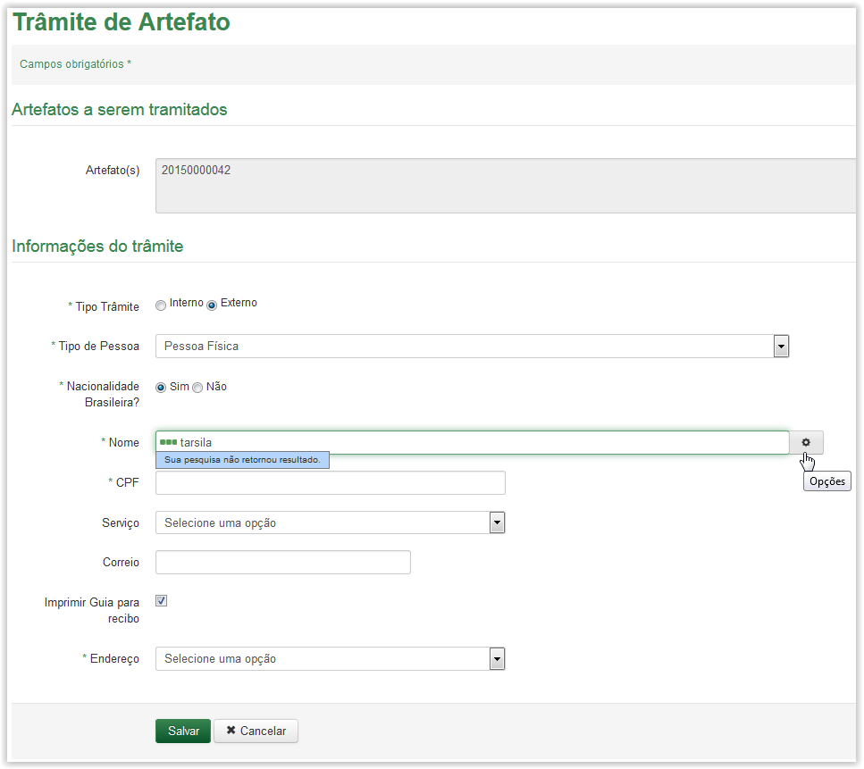
Ícone Opções para cadastro de pessoa física
Logo após efetuar o cadastro, digite novamente o nome no campo para que ele seja exibido na lista:
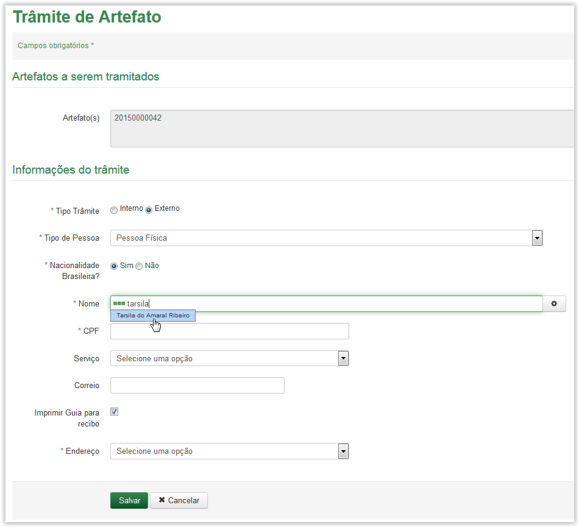
Selecionando o nome na lista após ter sido cadastrado
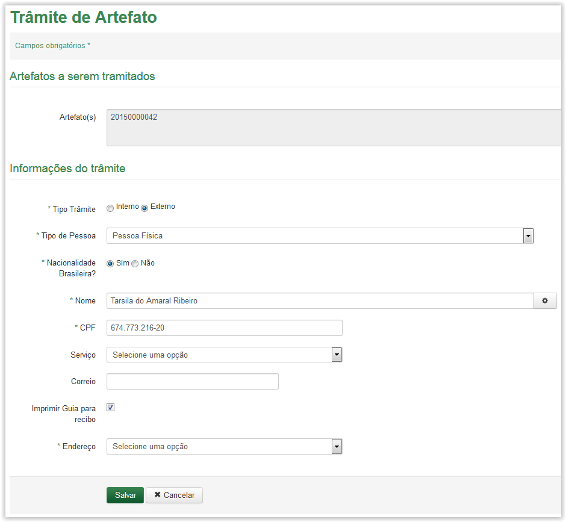
Preenchimento automático do CPF após informado o campo Nome
Observação: Caso o CPF informado não seja de uma pessoa cadastrada, o sistema apresenta a seguinte mensagem:

Mensagem de alerta de CPF não cadastrado
Clique no botão  e da mesma forma como foi explicado para o Nome, no caso do CPF também, utilize o ícone para efetuar o cadastro dessa pessoa e a partir daí o sistema poderá listá-lo das próximas vezes. (Veja Nota 3).
e da mesma forma como foi explicado para o Nome, no caso do CPF também, utilize o ícone para efetuar o cadastro dessa pessoa e a partir daí o sistema poderá listá-lo das próximas vezes. (Veja Nota 3).
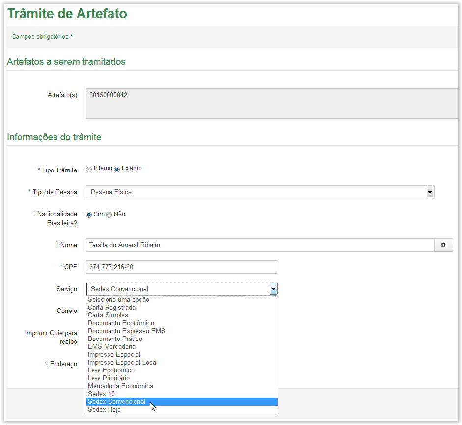
Selecionando um valor na lista de Serviço
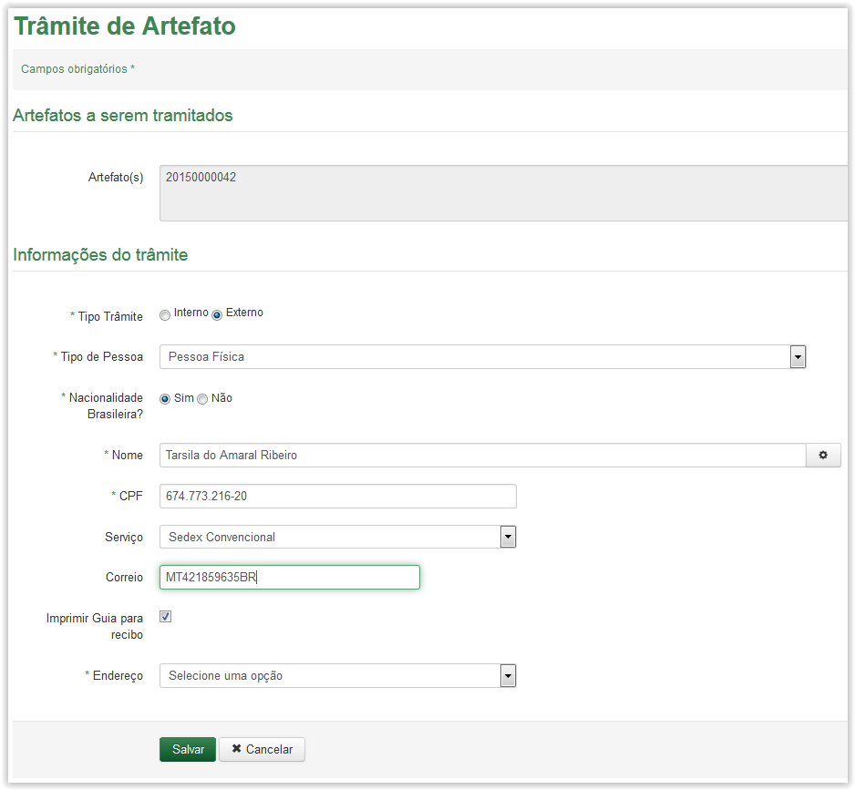
Informando o código de rastreamento no campo Correio
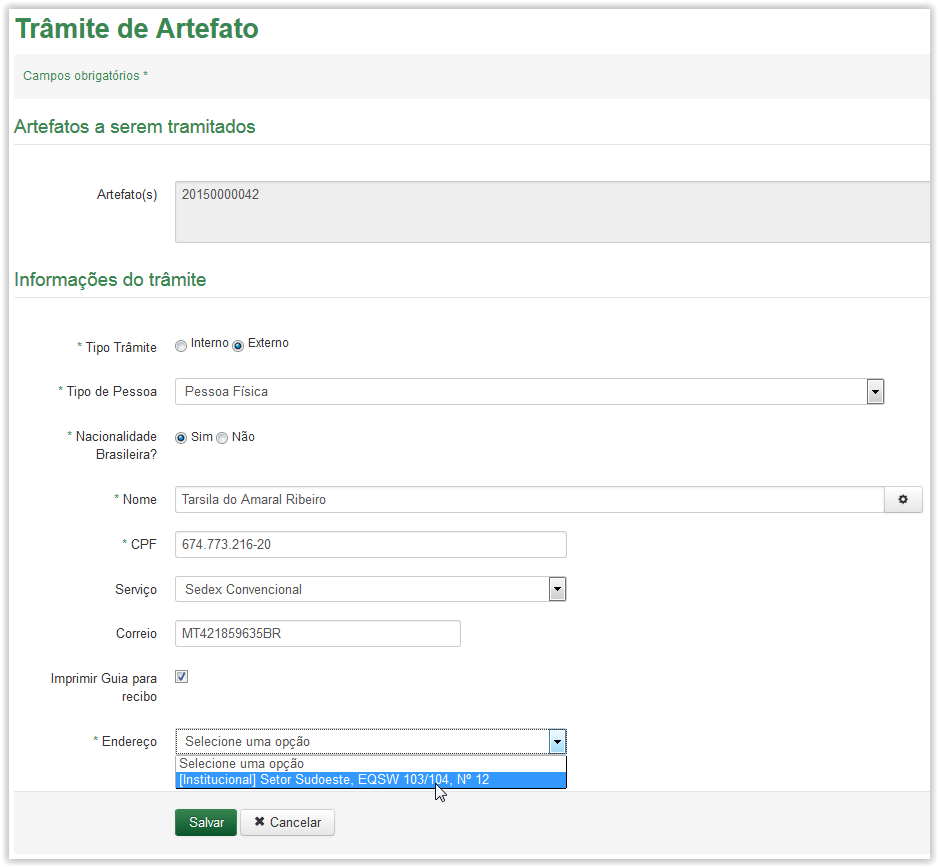
Selecionando um valor no campo Endereço
 e o sistema retornará para a tela da Área de Trabalho:
e o sistema retornará para a tela da Área de Trabalho: 
Mensagem de confirmação para tramitar artefato
 o sistema retorna para a tela de Trâmite de Artefato sem finalizar o trâmite. No entanto, ao clicar no botão , se não houver solicitação para Impressão da Guia de recibo, o sistema apenas apresenta a mensagem de sucesso. E no caso de haver solicitação para Impressão da Guia de recibo, além da mensagem de sucesso o sistema apresenta a tela abaixo com a possibilidade de salvar ou visualizar a guia.
o sistema retorna para a tela de Trâmite de Artefato sem finalizar o trâmite. No entanto, ao clicar no botão , se não houver solicitação para Impressão da Guia de recibo, o sistema apenas apresenta a mensagem de sucesso. E no caso de haver solicitação para Impressão da Guia de recibo, além da mensagem de sucesso o sistema apresenta a tela abaixo com a possibilidade de salvar ou visualizar a guia.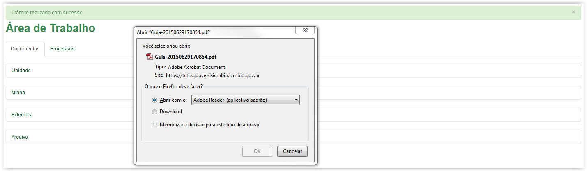
Mensagem de sucesso e impressão da Guia de Recibo
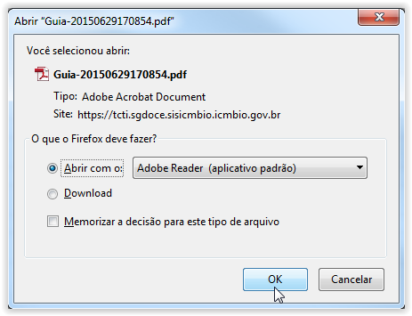
Solicitação para apresentação ou download do documento em formato "PDF"
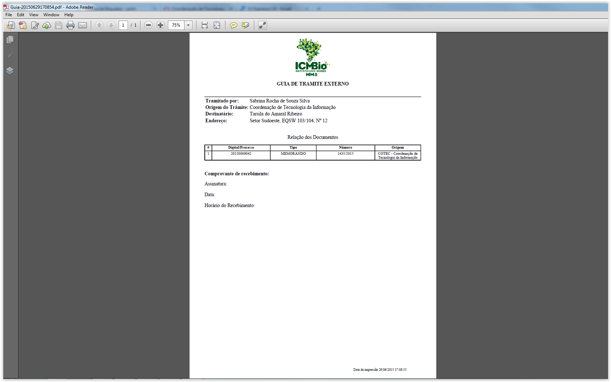
Guia de Trâmite Externo
IMPORTANTE!!
 Lembrete 1:
Lembrete 1:
Artefatos sigilosos não poderão ser tramitados externamente!
 Lembrete 2:
Lembrete 2:
O artefato deve possuir imagem para que possa ser tramitado, salvo quando ocorrer o trâmite dentro da Unidade do usuário logado!
 Nota 1:
Nota 1:
Os campos obrigatórios são indicados pelo sinal de asterisco (*) na cor verde ao lado do nome. Quando algum ou nenhum campo obrigatório for preenchido, o sistema apresenta uma mensagem de erro: "Campos de preenchimento obrigatório não foram preenchidos.".
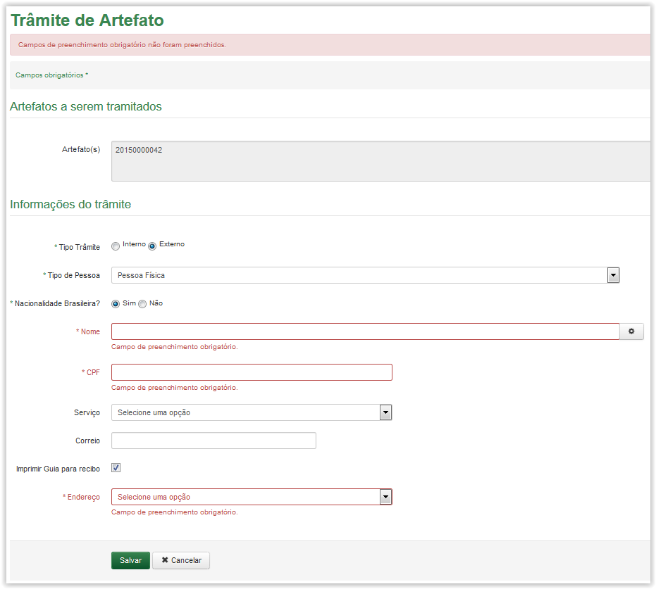
Comportamento da tela de Trâmite ao tentar salvar em branco.
 Nota 2:
Nota 2:
A única diferença que existe no preenchimento do trâmite quando se tratar de Brasileiro ou Estrangeiro é que na primeira opção, ou seja, ao selecionar Nacionalidade Brasileira como Sim, o sistema apresenta o campo CPF. No entanto, tratando-se da segunda opção, ou seja, ao selecionar Nacionalidade Brasileira como Não, o sistema apresenta o campo Passaporte em vez do campo CPF (veja as imagens abaixo):
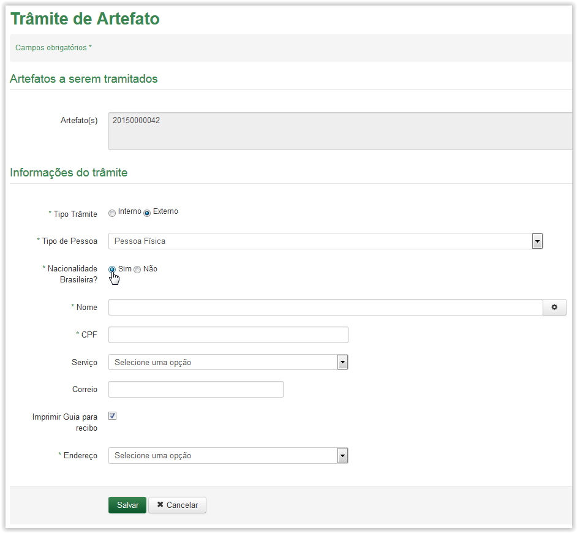
Selecionando a opção Sim no campo Nacionalidade Brasileira: o campo CPF é apresentado logo abaixo do campo Nome
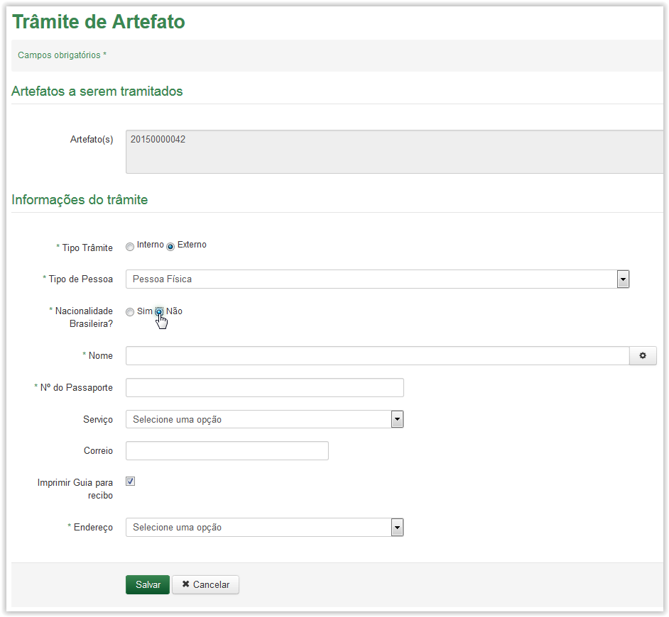
Selecionando a opção Não no campo Nacionalidade Brasileira: o campo Nº do Passaporte é apresentado logo abaixo do campo Nome
 Nota 3:
Nota 3:
Para cadastrar uma pessoa física, clique no ícone . Logo após, clique na opção Cadastrar, que será apresentada:
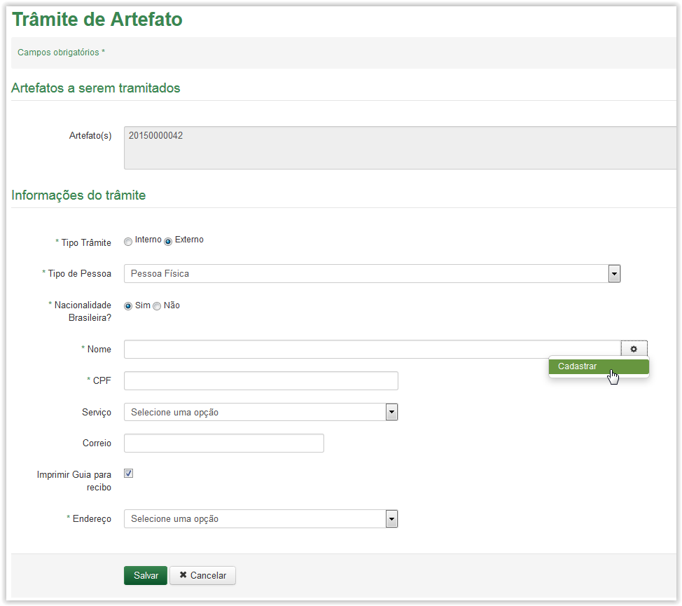
Selecionando opção para cadastrar pessoa física
O sistema exibe uma outra aba no seu navegador com a tela Cadastrar Pessoa Física, por meio da qual devem ser informados os dados solicitados:
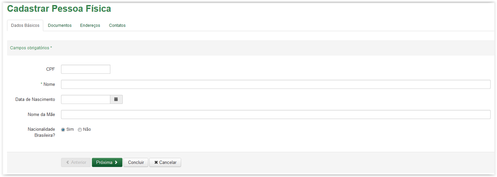
Tela Cadastrar Pessoa Física
Finalize o cadastro clicando no botão  . Será apresentada a seguinte mensagem:
. Será apresentada a seguinte mensagem:

Mensagem de sucesso
Após clicar no botão o sistema fecha a tela e a aba retornando para o trâmite externo.
 Nota 4:
Nota 4:
A mesma situação acontece para estrangeiro, ou seja:
Created with the Personal Edition of HelpNDoc: Full-featured EBook editor